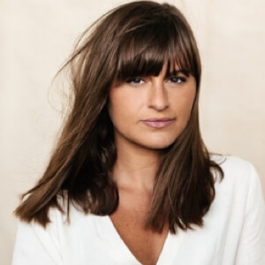
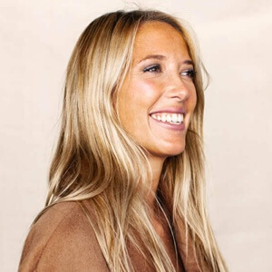

Elle designe nos packs avec goût, élégance et audace. Elle joue souvent à Tetris pour faire rentrer toutes les informations importantes du produit sur son contenant. Elle imagine et perfectionne chaque jour l'univers de la marque en donnant une place centrale à la nature, notre muse. Elle réalise tous nos shootings photos pour vous révéler la beauté de nos nouveautés.

Laure
Directrice Artistique
Ta fleur de coeur...Une fleur exotique.Ton produit P.Lab Beauty préféré...L'huile Corps & Visage Calendula + Marula, son odeur de Monoï m'emmène directement au soleil sur une plage !Le tips beauté qu'on peut te piquer...Se tresser les cheveux avant de s'endormir pour se réveiller avec de belles ondulations
Yelena
Directrice Artistique Junior
Ta fleur de coeur...Le coquelicot.Ton produit P.Lab Beauty préféré...Ma poudre ensoleillante pour illuminer mon teint naturellement et rapidement !Le tips beauté qu'on peut te piquer...J'applique un peu plus de mascara sur mes cils extérieur pour agrandir mon regard.

Fidji
Photographe
Ta fleur de coeur...La fleur de pavot.Ton produit P.Lab Beauty préféré...Le gommage au café pour exfolier en hydratant le corps, il permet de garder un beau bronzage uniforme l’été.Le tips beauté qu'on peut te piquer...Le recourbe cil pour ouvrir le regard.